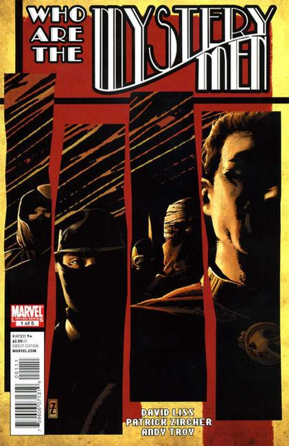

1939: Cover art by Lou Fine.

Written by David Liss
Illustrations by Patrick Zircher
2011: Before Captain America, before The Twelve, there was The Aviatrix, The Operative, Achilles, The Revenant and The Surgeon! What drives these five heroes to pull on masks and take to the rooftops of Manhattan? What dark conspiracy not only brings them together, but threatens to tear the America apart? On the hunt to solve a brutal murder, our champions will smash their way from gleaming penthouses of privilege to squalid alleyways, as the full horror of their enemies' schemes unfolds! Get ready for an action packed, edge-of-your-seat and in-continuity super hero adventure like no other when Marvel's first champions take the case this June, only in Mystery Men #1 (of 5)!